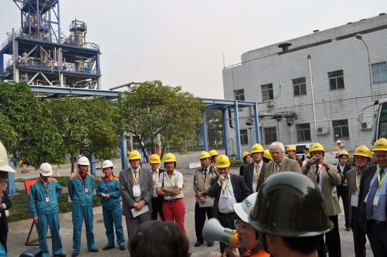

Headquartered in Kolkata, the Company’s Works is located at Jamshedpur, Jharkhand. There are presently 11 offices in India and a distribution network with 17 stocking points.
View Of TCIL
TCIL Works, situated at Golmuri, Jamshedpur has presently two Electrolytic Tinning Lines (ETLs) and Cold Rolling Mills (CRMs)
The Company is in the business of manufacturing and supplying reliable, cost-effective, value-added tin mill products. It manufactures various grades of electrolytic tinplates, tin-free steel sheets and Full Hard Cold Rolled Sheets (FHCR) used for metal packaging.
About
Providing a gateway to the manufacturing world, the event aims to introduce the industry to the participants providing them firsthand experience about metal production. (*Note: Shoes are compulsory for safety issues. Without shoes, visit to industries shall not be permitted)
Guidelines
(*Note: Shoes are compulsory for safety issues. Without shoes, visit to industries shall not be permitted)
TATA Steel
Tata Steel Limited (formerly Tata Iron and Steel Company Limited (TISCO)) is an Indian multinational steel-making company headquartered in Mumbai, Maharashtra, India, and a subsidiary of the Tata Group. It was the 11th largest steel producing company in the world in 2013, with an annual crude steel capacity of 25.3 million tonnes, and the second largest private-sector steel company in India (measured by domestic production) with an annual capacity of 9.7 million tonnes after SAIL. Tata Steel has manufacturing operations in 26 countries, including Australia, China, India, the Netherlands, Singapore, Thailand and the United Kingdom, and employs around 80,500 people. Its largest plant is located in Jamshedpur, Jharkhand. In 2007 Tata Steel acquired the UK-based steel maker Corus which was the largest international acquisition by an Indian company till that date. It was ranked 486th in the 2014 Fortune Global 500 ranking of the worlds biggest corporations. It was the seventh most valuable Indian brand of 2013 as per Brand Finance. On 17 February 2012 Tata Steel completed 100 years of steel making in India.Usha Martin
Usha Martin is one of the largest manufacturers of wire ropes in the world and leading specialty steel manufacturer in India. With a history of more than 50 years, the company has a global base of wire rope manufacturing with facilities located in India, UK, Dubai, and Bangkok. For specific products, Usha Martin has collaborated with globally reputed companies like Gustav Wolf of Germany, Joh Pengg of Austria and TESAC wire rope of Japan. With a philosophy that quality ropes are made from quality steel, the company set up specialty steel plant in 1974. The plant uses high quality iron ore and coal from captive mines enabling it to achieve high consistency in raw material quality and hence a consistent quality of steel products. Today, with one million tonne capacity, it is the largest specialty steel plant in India in long product segment.Tata Tinplate
TCIL is today the largest indigenous producer of tin coated and tin free steel sheets in India, enjoying 35-40% market share and undoubtedly the industry leader for more than 90 years. The company exports about 20-25% of its production directly to end-users (can-makers) and its products are well accepted in the markets of SE Asia, Middle East and some developed countries in Europe.Headquartered in Kolkata, the Company’s Works is located at Jamshedpur, Jharkhand. There are presently 11 offices in India and a distribution network with 17 stocking points.
View Of TCIL
TCIL Works, situated at Golmuri, Jamshedpur has presently two Electrolytic Tinning Lines (ETLs) and Cold Rolling Mills (CRMs)
The Company is in the business of manufacturing and supplying reliable, cost-effective, value-added tin mill products. It manufactures various grades of electrolytic tinplates, tin-free steel sheets and Full Hard Cold Rolled Sheets (FHCR) used for metal packaging.